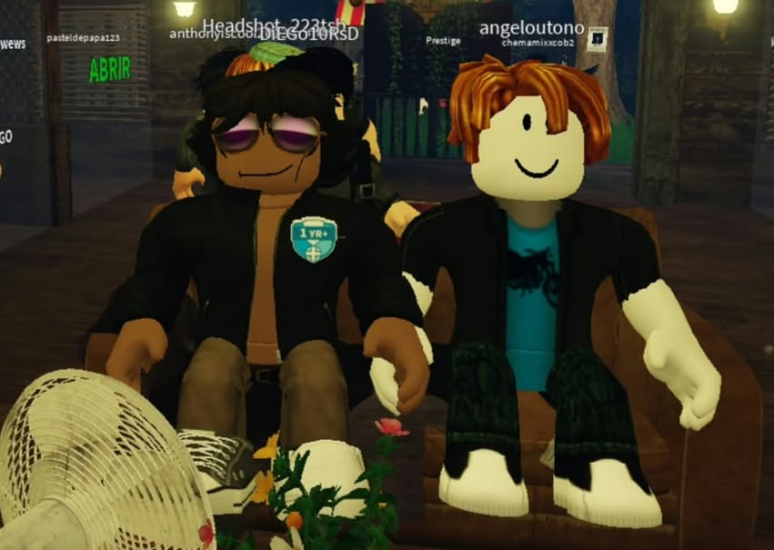
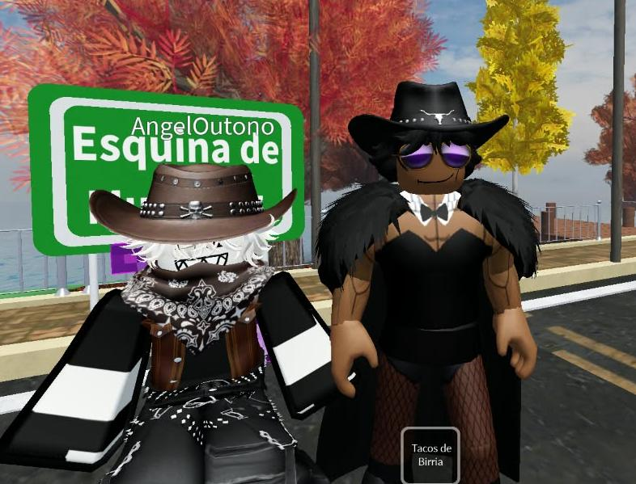
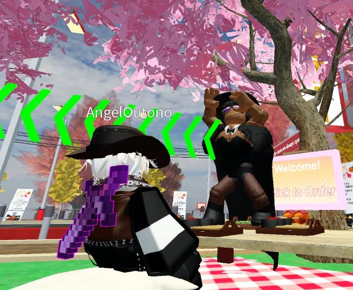
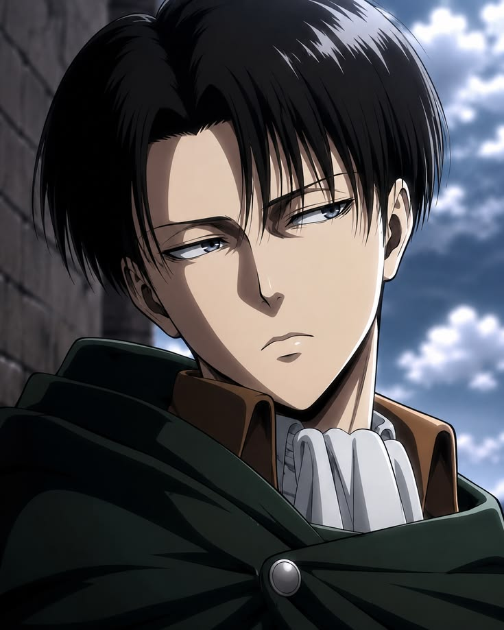
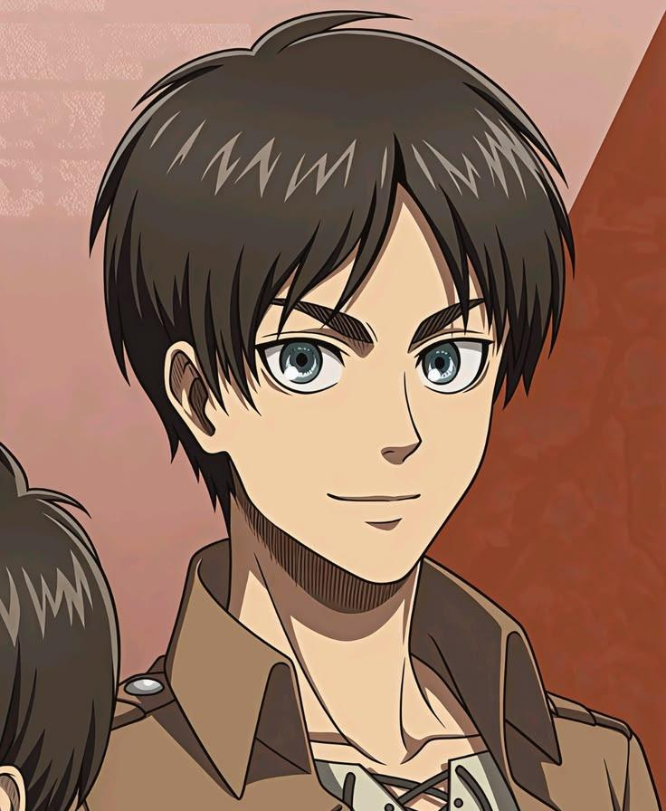
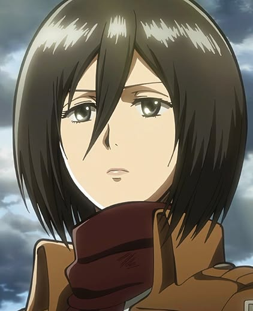
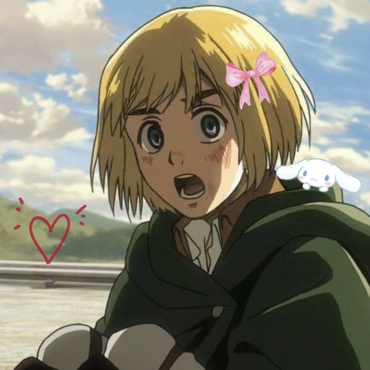

Hoy le deseo un FELIIZZZ CUMPLEAÑOSS A MI AMIKITA GERMAANNN!! la mejor artista, escritora, poeta, lectora, la mejor haciendo monitos en el Gacha Life, la mejor dibujante, la mejor jugadora de roblox, la mejor cuidadora de un gatito emo y un conejito, y una de las mejores amigas que podria desear :,3
Lo que te hace especial ✨
🎨 como te veo
eres tierna, alegre, muy chistosa, solidaria, inteligente, autista, aveces distraida pero atenta, eres muy linda,siempre luchas por ti misma eres una increible persona y siempre estas ahi cuando alguien te necesita
💫 Lo que admiro de ti
Que seas la persona con la que pueda compartir una conversacion tranquila y profunda a una toda idiota y autista sin tener que guardarme cosas, cuando me cuentas que haces, cuando me dices cosas random, cuando me mandas audios GRITANDO JJAJJAJA, me la paso super bien cuando pasamos tiempo juntos, me agrada mucho pasar el rato, me encanta jugar boblox contigo. tambien cuando hablas sobre cosas que te pasan o haces.
Nuestros Mejores Momentos 📸



Muro de Felicitaciones
¡FELIZ CUMPLEAÑOS! ¡Un año más de vida! ¿Te das cuenta de lo increíble que es eso? ¡Un año entero de experiencias, descubrimientos, errores y nuevas posibilidades! ¡Imagínate todas las cosas que todavía puedes aprender! ¡Todas las personas que puedes conocer y todas las experiencias que aún te esperan! Aunque, hablando en serio, espero que este nuevo año te traiga muchísima felicidad. Que nunca pierdas la curiosidad por el mundo, que sigas haciendo preguntas y que nunca dejes de sorprenderte por las pequeñas cosas. No permitas que las dificultades apaguen tu entusiasmo. Todavía hay muchísimas cosas maravillosas por descubrir. ¡Y AHORA VEN AQUÍ, QUE TENGO COMO VEINTE IDEAS PARA CELEBRAR TU CUMPLEAÑOS! P. D.: Levi dice que no podemos utilizar el equipo de maniobras tridimensionales para decorar el pastel. ¡ABURRIDO!

Feliz cumpleaños. No esperes que te cante ni que te compre un pastel enorme. Tienes un año más, así que procura no desperdiciarlo. Cuida de ti, limpia tu desastre y, por una vez, date permiso de disfrutar el día. Te lo has ganado.

¡Feliz cumpleaños! Oye, tienes un año más por delante. No lo desperdicies preocupándote por lo que piensen los demás. Haz lo que quieras hacer, persigue lo que deseas y no dejes que nadie decida cómo debes vivir. La vida es demasiado corta para quedarse quieto esperando que las cosas cambien por sí solas. Así que disfruta tu día, sonríe todo lo que puedas y sigue avanzando. ¡No te rindas!

Feliz cumpleaños. Espero que hoy puedas descansar y disfrutar de las personas que te quieren. No importa cuántas dificultades encuentres en el camino, recuerda que no tienes que enfrentarlas todas por tu cuenta. Está bien apoyarte en los demás y permitirte ser feliz. El tiempo que compartimos con las personas que queremos es valioso. Por eso, espero que este nuevo año esté lleno de momentos que quieras conservar en tu memoria. Cuídate mucho, ¿sí? Y no olvides que tu felicidad también importa. Feliz cumpleaños.

¡Feliz cumpleaños! ¿Sabes? La vida está llena de pequeños momentos que terminan significando más de lo que imaginamos. Las risas, las personas que conocemos y los recuerdos que construimos hacen que todo valga la pena. Espero que este nuevo año te traiga muchas razones para sonreír, nuevas experiencias y personas con quienes compartirlas. Y recuerda, no necesitas ser alguien extraordinario para hacer que tu existencia sea importante. ¡Feliz cumpleaños! 💙